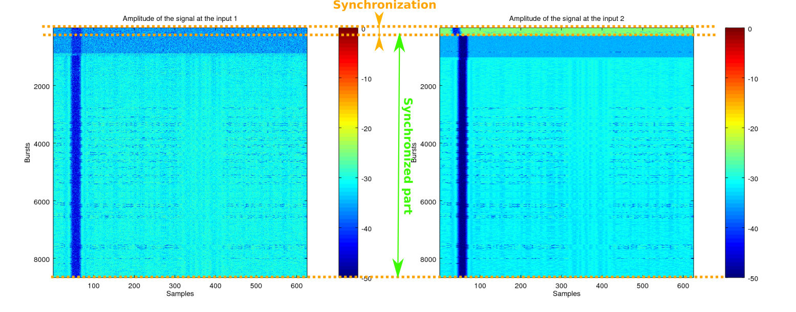
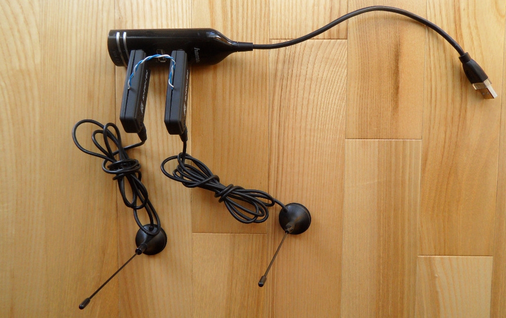
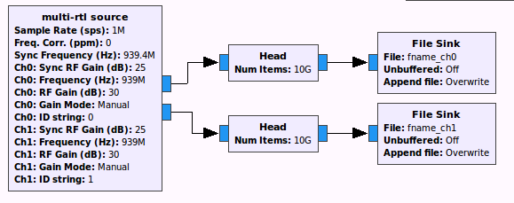
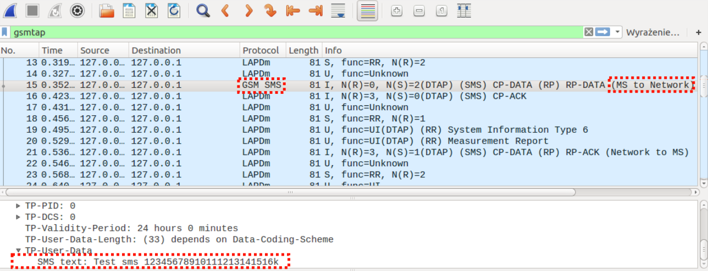

Multi-RTL
Making multiple channels receiver from cheap RTL-SDR dongles
As a developer of gr-gsm project - a GNU Radio based software for receiving GSM signal - I always thought that it would be great to have a multiple channels receiver that would be available for everyone. The reason is that it would be possible to do more with my software for all users who are interested in giving it a try and not only those who can afford a multichannel device like an USRP. For example: with two channel receiver it would be possible to receive uplink of a GSM channel in addition to downlink. To achieve this with USRPs N200 two devices synchronized with a special cable are required. Total price of such solution is about 4 thousand dollars - too big amount for someone who starts journey with software defined radio and who at the same time might be interested in gr-gsm.
I was reluctant to implement a cheap receiver with multiple RF channels myself. I thought that it was a matter of a short time before someone demonstrate a working solution transforming cheap RTL-SDR dongles (digital television receivers re-purposed to act as a software radio receivers) into a multi-channel receiver. I had good reasons to think that it will eventually happen. There was already some important work done on this subject, starting with Juha Vierinen's idea to synchronize clocks of multiple RTL-SDR receivers, so they were sampling with exactly the same rate.
What was missing was time-synchronization between RTL-SDR dongles. When you start multiple RTL-SDR dongles at the roughly the same moment there always will be random delays (changing from one program start to another) between the sample streams coming from different receiver. YO3IIU presented synchronization of the receivers working on the same frequency with use of cross-correlation of the signals coming from many receivers. It was done off-line - on files with the captured signal stored to disk - and no way to synchronize channels that work on different frequencies was demonstrated. This way it wasn't possible to capture for example GSM uplink and downlink synchronously as they are on different frequencies with large (at 45MHz for GSM900) separation.
So time passed but somehow no ready-made solution materialized. At some point (beginning of December 2015) I decided that some effort from my side might be required in order to speed up this process a bit.
Before I decided to code time-synchronization myself I have already shown that RTL-SDR receivers keep time-synchronization across re-tunings to different carrier frequencies. I will show it again here with a bit more of the background information.
I've coded the test so it first started with recording a signal on a GSM C0 (BCCH) frequency, then it switched to another central frequency where only noise was present and in the end it switched back to the same GSM C0 frequency. The GSM signal's amplitude is periodic with the period of 156.25us - equal to the duration of one GSM TDMA time slot. Each GSM burst transmitted inside of time slot has constant amplitude. After a burst there is always 8.25us long guard period when signal amplitude decreases to 0. If you sample the signal with 4*gsm_symbold_rate=4*1625000/6=1.08333... MHz the length of a time slot in samples is 625. The easy way giving indication that the signal didn't loose synchronization is to look if guard periods are in the expected positions. In order to do this graphically I've cut the signal into blocks of the length of a single time slot, created a matrix with consecutive bursts in the rows and plotted the matrix as an image with pixels intensity representing amplitude. The result can be observed on the image below:

You can first see the amplitude of the GSM signal, then amplitude of noise and in the end amplitude of the GSM signal again. What can be seen is that guard periods after two retunes of a RTL-SDR receiver are aligned. The same situation repeated for all recordings I made. Synchronization is kept. Hurray!
This experiment had shown that it is possible to time-synchronize multiple RTL-SDR dongles working on different frequencies with very simple means:
- tuning the
RTL-SDRdongles to the same frequency where some transmission is present, - recording a short signals with all of the dongles,
- computing cross-correlation of the signals (i.e. with respect to a one selected channel),
- finding position of maximums of cross-correlations in order to estimate relative delays of the channels,
- correcting the delays so the channels are time-synchronized,
- switching the dongles to their target frequencies,
- changing other parameters of the channels (like gains) to target values.
What was left was to get hands dirty and implement a program that does all these steps. I decided that the simplest way to implement the software was to create a GNU Radio hierarchical block that uses multiple RTL-SDR source blocks (created by osmocom project) - one for each dongle comprising a channel.
First I wanted to do everything with use of Python only. I used off the shelf vetor sink block to get signals samples to Python. Then the delays were and then reconfigured the flowgrap in order to disconnect the vector sinks - so they don't save samples indefinitely. This solution proved to be wrong as after each reconfiguration of the flowgraph relative delays of channels changed randomly.
In order to avoid modifying the path that I've chosen initially too much I decided to change vector sink block's C++ code so it fit the needs. I've extendded number of input channels (from one to any number), added possibility to limit the number of sample collected, and added call to a callback function when this number is reached. The callback function takes samples stored for each channel and does the steps described previously, needed in order to synchronize the received streams. Most of the work was done during winter break - until 12'th January 2016. The resulting hierarchical GNU Radio block is called Multi-RTL.
The example of recording with a two channel Multi-RTL receiver is shown at the pictures below. The recorded was GSM signal and the result is presented in the same way as previously - with amplitude of a signal in GSM time-slots plotted as horizontal lines of pixels in the images. At the beginning there is synchronization phase when the signals coming from input 1 and input 2 of the receiver are not aligned in time yet. At this moment delay between input 1 and input 2 is calculated and at the end correction is applied to the input 2. From that moment inputs of the receiver are synchronized.

{kind=link}
In October 2015 Teejez has uploaded to the github his rtl_coherent project - software that automatizes synchronization between receivers working on the same frequency, with some additional hardware modifications required. He used additional synchronization signal that is introduced through switching of receivers' RF inputs, to connect them to common noise signal generator and then reconnect them to antennas. I was made aware of rtl_coherent project only recently - when I was finishing to write this text.
Capturing GSM downlink and uplink with Multi-RTL
The usage of the block is presented in the project's readme. Here I will present the example of the use of Multi-RTL source block for synchronous reception of downlink and uplink of a GSM C0 channel. As a prerequisite two RTL-SDR dongles are needed.
The next step is not obligatory, but it will enable identification of the receiver's channels:
- connect the first receiver and change its serial number with the following command: rtl_eeprom -d 0 -s 00000001
- mark the dongle to know that it is the first one,
- disconnect the dongle,
- connect the secon one and change its serial number with the following command: rtl_eeprom -d 0 -s 00000002
- mark the dongle so you know that it's the second one.
The basic prerequisite is to synchronize clocks of the dongles. In order to do that remove the oscillator form the second dongle and connect the two dongles according to the photo below:

The assembled receiver with antennas and a USB hub is shown below: 
I've created a sample gnuradio-companion application (mutlirtl_rx_to_cfile_2chan.grc) that enables two channel reception and storing the signals to files. Its flow-graph is presented below. It is very simple - there is Multi-RTL source configured to work with two channels then there are head blocks limiting number of recorded samples and in the end for each of the channels signals are stored to files with use of file sink blocks.

In the example there was downlink of the C0 carrier frequency at 939.4MHz (freq-ch0). Uplink of that radio channel was at 894.4MHz (freq-ch1) as uplink-downlink separation for GSM900 is 45MHz. For synchronization downlink of the C0 channel can be used (sync-freq option is therefore 939.4MHz), because it provides good enough accuracy for this application. As sampling frequency (samp-rate) 4*GSM_symbol_rate=4*1625000/6=1083333.3333(...) was be used. Gains were set to 30 dB for downlink and 10dB for the uplink (gain-ch0, gain-ch1). Synchronization gains were set to the same value 30dB (sync-gain-ch0, sync-gain-ch1). Samples of the signals were stored to downlink.cfile (fname-ch0) and uplink.cfile (fname-ch1). Finally the program was invoked with following options:
./multi-rtl/examples/mutlirtl_rx_to_cfile_2chan.py --ch0-id-string="00000001" --ch1-id-string="00000002" --samp-rate 1083333.3333333333 --freq-ch0 939.4M --freq-ch1 894.4M --sync-freq 939.4e6 --gain-ch0 30 --gain-ch1 10 --sync-gain-ch0 30 --sync-gain-ch1 30 --fname-ch0 downlink.cfile --fname-ch1 uplink.cfileDuring the recording I've sent an SMS with my phone that was working on the recorded frequency. The resulting files (renamed to sms_multirtl_downlink_tail.cfile and sms_multirtl_uplink_tail.cfile) can be downloaded with use of the links below:
As I could recover the key used for my own call/SMS I was able to decode the encrypted part of the traffic with the SMS content. To decode the signal installation of gr-gsm is required. After that copy the uplink_decoding_multi_rtl.py script from gr-gsm's examples to the directory where the capture files are located. Then start Wireshark:
wireshark -k -f udp -Y gsmtap -i lo &and run the script that does decryption and decoding:
./uplink_decoding_multi_rtl.pyWireshark should capture the decoded messages enabling analysis of the frames. Among them there is an SMS sent from the mobile station in the uplink channel. It is possible to view the content of the SMS in Wireshark like it is shown on theimage below:

Summary
Multi-RTL adds time-synchronization to RTL-SDR receivers sharing a common clock. There are many possible use-cases of this capability.
For example - multiple receiving channels can be working on the same frequency. This enables applications like passive radar. One dongle can be connected to the antenna picking up reference signal and other receivers can be connected to antennas gathering objects' echoes. This possibility was shown by Juha Vierinen. Time synchronization was (most probably) done in off-line processing - which is very fine for a proof of concept but not convenient for an user application.
Regarding Teejez's rtl_coherent - it achieves the goal of synchronizing multiple RTL-SDR receivers working on the same central frequency but it requires additional noise source and switches to synchronize RTL-SDR receivers working on the same frequency. Multi-RTL receiver is simpler because it uses frequency switching (no RF switches required) and for synchronization it utilizes signals available in the air (additional generator is not necessary). Having a synchronization signal source that you control might be valuable for reliability of time-difference estimation but it increases cost a bit and adds some complication that might be harder to overcome by the newcomers.
With Multi-RTL all RX channels can also work synchronously on different central frequencies. Addition of this capability is the most original contribution that Multi-RTL brings to RTL-SDR world and it achieves that goal with simple and universal means. This makes possible many applications where received signals are spread over frequency range that exceeds maximum sampling rate of a single RTL-SDR receiver, like:
- reception of GSM downlink and uplink simultaneously,
- reception of transmissions that use frequency hopping (like GSM hopping channels).
Multi-RTL also opens the way for works on coherent aggregation of bandwidth of multiple RTL-SDR receivers in order to receive signals with bandwidth wider than sampling rate of a single receiver.
What is left to be done in the Multi-RTL is to add automatic resynchronization whenever some interruption in the communication with any of the receivers occurs. Currently an overflow of a buffer in a RTL-SDR receiver causes synchronization loss, until user call resynchronization function himself. Multi-RTL needs some way to know from osmocom source that an overflow happened. osmocom source doesn't inform GNU Radio blocks connected to it about communication problems yet, but it could send this information downstream with use of GNU Radio's stream tags.